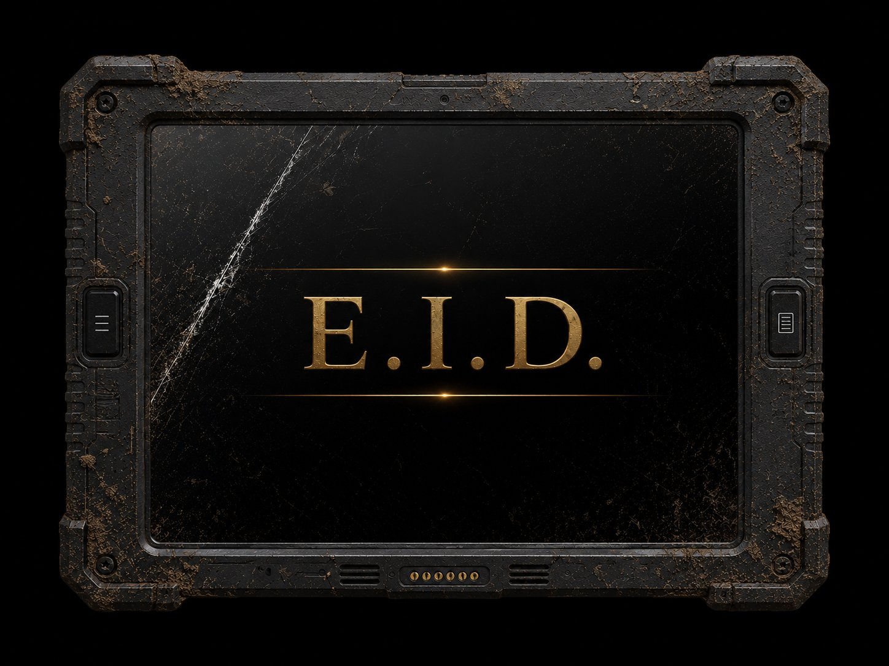

Old United Kingdom.
APOCALYPTIC THREAT
Should containment fail beyond the Old United Kingdom, the probability of continent-wide societal collapse is considered extreme.
Immediate quarantine and complete border isolation remain the highest operational priority.
Several personnel reported hearing familiar voices calling from the darkness. Believing survivors were nearby, they moved to investigate. None returned.
Recovered intelligence indicates the subjects operate in coordinated packs, utilising what appears to be a forward scout before engaging the main group. This behaviour raises serious concerns regarding their cognitive capability.
Despite extensive observation, no complete visual identification has been obtained. Surveillance teams consistently report that the subjects move with exceptional speed, making reliable documentation impossible.
Further information requires Complete Clearance.